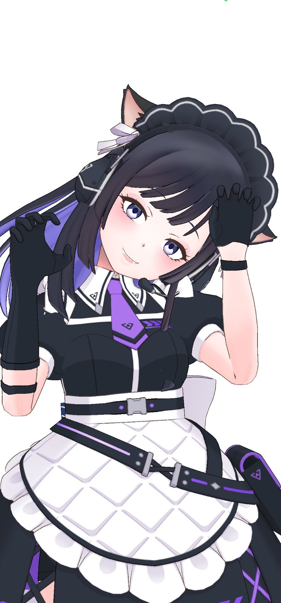

雛屋ちゃんへようこそ
神秘的な黒の瞳と可愛らしい猫耳を持つメイドVtuber、雛屋ちゃん。 ゴシックな美しさと優雅な立ち振る舞いで多くのファンを魅了しています。
プロフィール
基本情報
- 特徴: メイド服、猫耳、黒の瞳
- テーマカラー: 黒・白・紫・ピンク
- 雰囲気: エレガント、神秘的
- 好きなもの: HUNTER×HUNTER
ギャラリー


～神秘的なメイドVtuberへの愛を込めて～
神秘的な黒の瞳と可愛らしい猫耳を持つメイドVtuber、雛屋ちゃん。 ゴシックな美しさと優雅な立ち振る舞いで多くのファンを魅了しています。